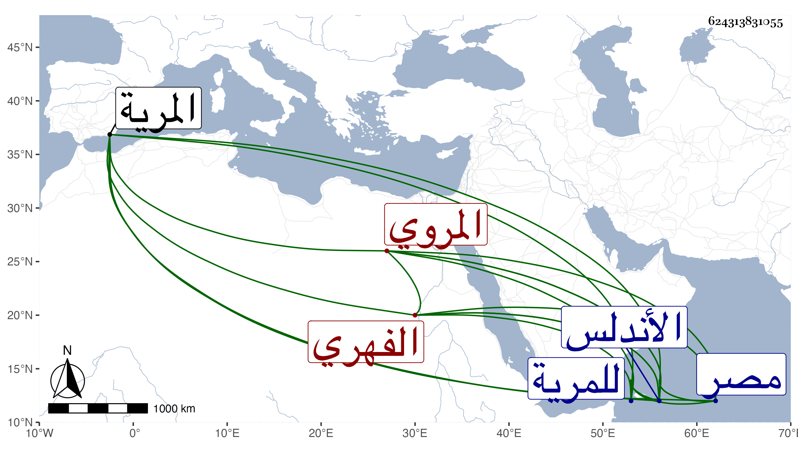

0902Sakhawi.DawLamic.ITO20230111-ara1.EIS1600.624313831055
Biography ID: 624313831055
95
محمد بن محمد بن أحمد بن محمد بن أحمد بن محمد بن أحمد الفهري الشاطبي المريي أو المروي نسبة للمرية من بلاد الأندلس ويعرف بالشاطبي . ولد في سنة ثمان وستين بالمرية ونشأ بها فحفظ القرآن وتلابه لنافع علي محمد الروطي بعد أن جوده على أبيه ومعظم المختصر وجميع رجز ابن عاصم في العربية واشتغل فيهما عند عبد الله الزليحي ومحمد بن معوذ وعنهما أخذ الفرائض في الحساب والعروض . وسافر من الأندلس لبعض ضروراته ولازال حتى دخل مصر في أول سنة خمس وتسعين فنزل بتربة السلطان وحضر إلي في أثناء ربيع الآخر منها فسمع مني المسلسل وأنشدني قوله :
| يا نفس لا جزعا بذا انقضى الزمن | مسرة ساعة وساعة حزن |
| وتارة عسرة من بعد ميسرة | وتارة صحة من بعدها وهن |
| وأمس تمسي لدى أهل وفي وطن | واليوم تصبح لا أهل ولا وطن |
| بيناك في عزة وأنت محترم | أصبحت في ذلة وأنت ممتهن |
| بيناك فوق الثريا رفعة وعلا | أصبحت تحت الثرى وخفضك الكفن |
| أعمار أولاد آدم بذا ظعنت | وليس الا به للغابر الظعن |
| كم أسوة فيهم لعاقل فطن | لكن فديتك أين العاقل القطن |
